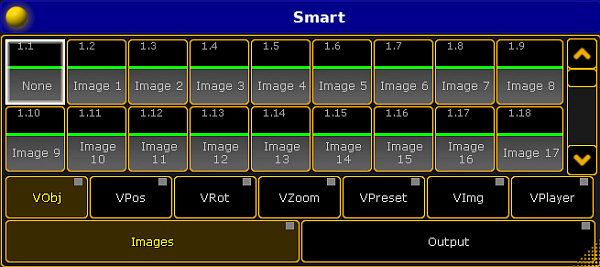

The bitmap fixture has 100 images and 100 layouts by default. If you need more than the 100 images or 100 layouts, you need to edit the bitmap fixture.
To select the bitmap fixture, tap at the bitmap fixture in the fixture sheet.
The bitmap fixture has a yellow font.
To select the attribute you like to edit, tap at the attribute in the fixture sheet, e.g. Images.
To open the smart view, tap at an empty space in the user defined area, tap at Other, and then Smart.
The Smart window opens.

Smart view with images attributes of the bitmap fixture
Turn the encoder to e.g. 101, press Store and tap at the last empty object tile in the smart view.
The bitmap fixture is edited and has 101 images to select. For more information about the smart view, see using smart view.